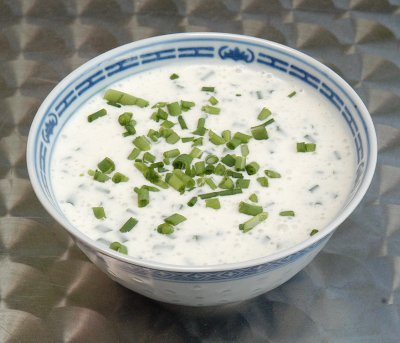

| Zutaten für 4 Personen: | |
| 250 g | Magerquark |
| 2 dl | Rahm |
| 4 Tl | Aromat |
| 1-2 Tl | weisser Pfeffer |
| 1 Bund | Schnittlauch |
Quark und Rahm mischen. Tipp: Erst den Quark und dann nur soviel Rahm bis zum gewünschten Verflüssigungsgrad beigeben.
Mit Aromat und Pfeffer würzen. Mit Schnittlauch garnieren.
Passt natürlich am besten zu Baked Potatos. Da ist die Sorte Agria am besten.
Erich von Däniken, 31.12.94
Hervorragend! Absolut sensationell. Mein Geheimrezept. RE
@LINKBACK_TAG@ @WAKELOCK@